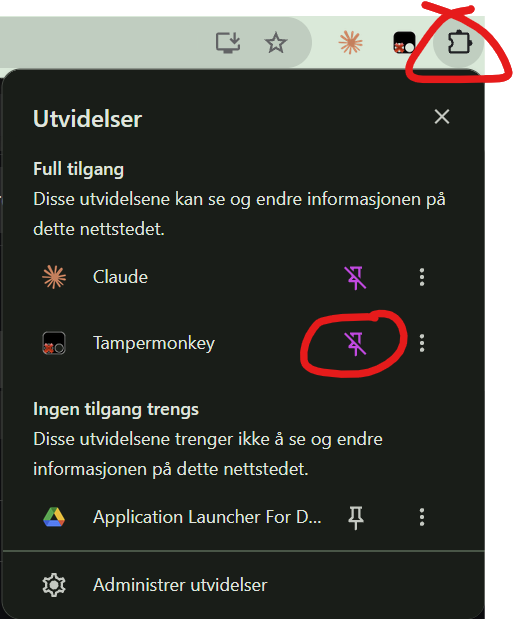
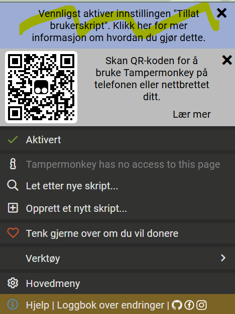
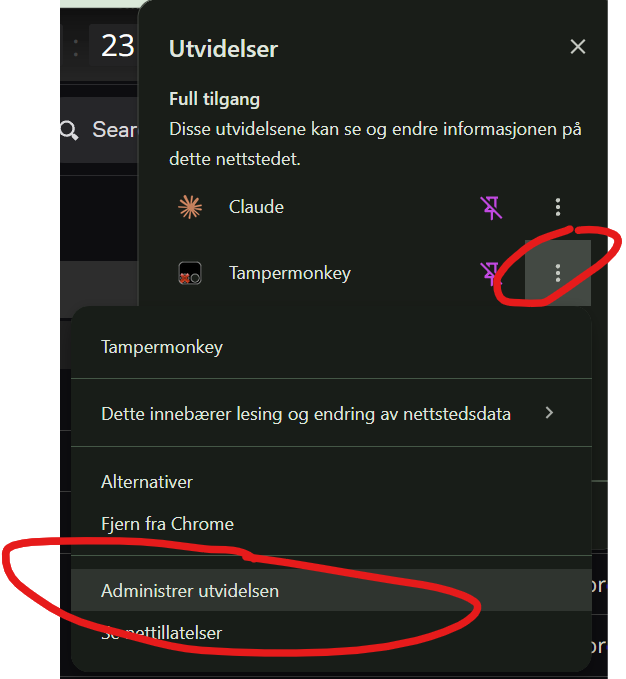
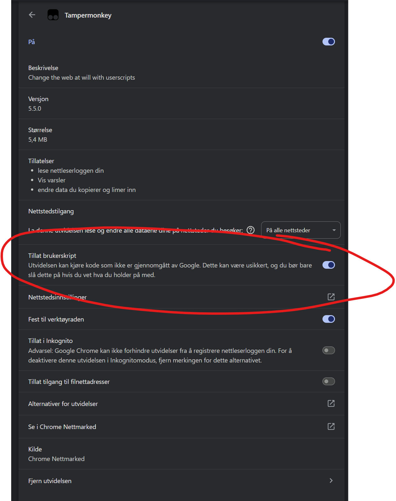
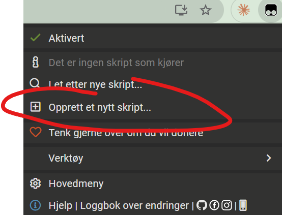
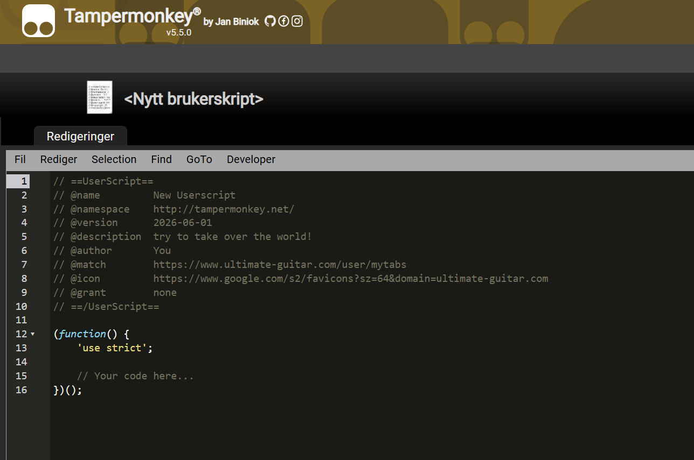
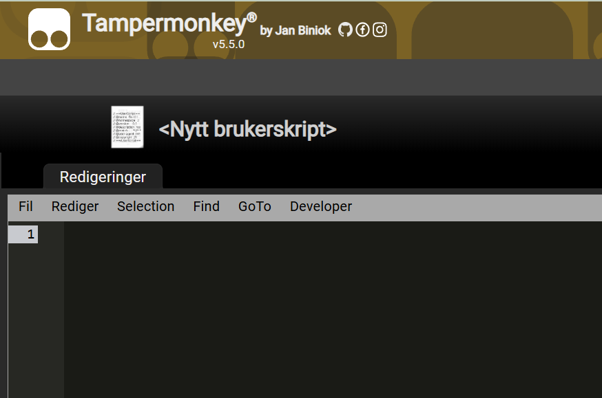
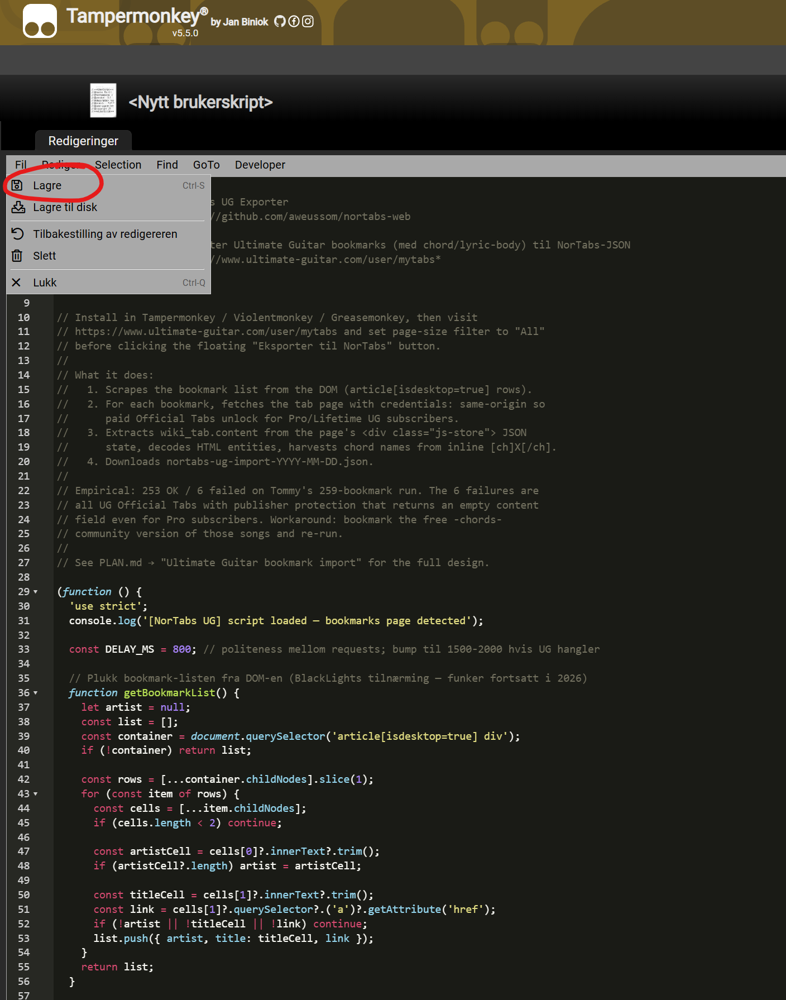

Ta dine egne Ultimate Guitar-bokmerker inn i TabTabTab. I Chrome blir hver tab i tillegg taget av on-device AI (Gemini Nano) for vibe-søk — alt skjer i din egen nettleser.
TabTabTab UG-eksportøren er et userscript — en liten JavaScript-snutt som kjører i nettleseren din når du er på Ultimate Guitar. Du trenger en utvidelse som kjører slike skript:
Klikk «Legg til»/«Install» for å installere utvidelsen.

Klikk puzzle-ikonet i Chrome og «pin» Tampermonkey så den er lett tilgjengelig.

Nyere Chrome-versjoner krever at du eksplisitt godkjenner at utvidelser kjører userscripts. Første gang du klikker på Tampermonkey-ikonet vil du måtte gå gjennom denne tre-stegs godkjenningen:



Åpne rå-skriptet i en ny fane og kopier hele innholdet:
Når du er på raw-siden: Ctrl+A (velg alt), deretter Ctrl+C (kopier).
Klikk Tampermonkey-ikonet → «Create a new script…».

I editoren som åpnes: Ctrl+A (velg alt template-tekst), Delete (slett).


Lim inn TabTabTab-skriptet (Ctrl+V) og lagre (Ctrl+S eller File → Save).

Logg inn på ultimate-guitar.com og
åpne din egen bokmerke-side
(ultimate-guitar.com/user/mytabs).
Viktig: sett side-størrelses-filteret til «All» (i stedet for 50/100). Eksportøren leser kun bokmerker som er synlige i DOM-en, så med «All» får du alt på samme runde.

Klikk den flytende gule knappen «⬇ Eksporter til TabTabTab» øverst til høyre på siden. Skriptet går gjennom hver bokmerket tab, henter innholdet, og pakker alt i én JSON-fil. Det er ~800 ms pause mellom hver tab — for ~250 bokmerker tar det ca. 3-4 minutter.

Når alt er ferdig laster skriptet automatisk ned en fil tabtabtab-ug-import-<dato>.json.

failed[]-listen i JSON-en. Workaround: bokmerk den frie
-chords--versjonen av samme låt i stedet.
Gå til Sangbøker → ⤓ Importer UG-tabs, slipp JSON-filen på drop-sonen (eller klikk for filvelger).


Når ferdig: artistene dukker opp under riktig bokstav med en liten rød U-markør, og en sangbok «Mine UG-importer» vises i sangbok-lista. Søk på tema/stemning/tekstlinjer — dine importerte tabs har en liten relevance-boost så de rangerer høyere enn tangentielt-taggede katalog-låter.